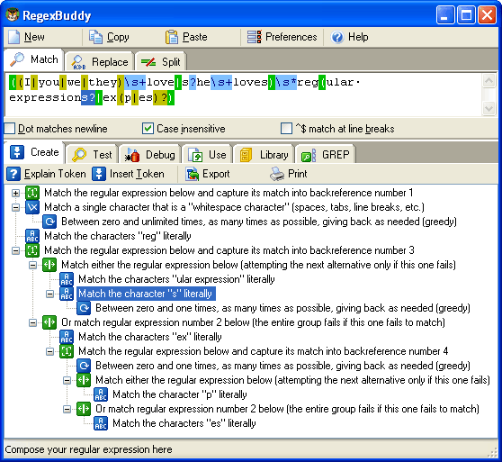

The entire contents of this web site are available as an electronic help file that you can read on your computer, and as a PDF file optimized for printing. You can use these files to learn all about regular expressions at your leasure.
The help file and PDF manual are part of an exciting product called RegexBuddy. For $29.95, you get a very comprehensive regular expression tutorial and reference, as well as a personal regular expression assistant.
RegexBuddy can analyze any regular expression and represent it as an easy-to-understand tree of regex building blocks. You can use these regex building block instead of or in combination with the usual regex syntax to create and edit regular expressions. All tokens link to the tutorial in the help file, for instant reference. Learning and working with regular expressions has never been easier.
RegexBuddy is designed and developed by Jan Goyvaerts, the author of the regular expression tutorial on this web site. Rest assured that the quality of the RegexBuddy software is just as high as the quality of the regex tutorial.
(continued below screen shot)

RegexBuddy will continue to assist you with using regular expressions well beyond your initial learning period. Even as an old hand at regular expressions, I vastly prefer to use RegexBuddy to write a regular expression than without it. Though I generally do type in the regex syntax directly, the regex tree makes it much easier to navigate any regular expression.
RegexBuddy provides a safe sandbox for interactively testing a regular expression. Even regex experts need to test their regular expressions. It is the only way to be 100% sure a regex matches what you want, and does not match what you do not want.
If you are a software developer, RegexBuddy will make it much easier to use the power of regular expressions in your own applications. RegexBuddy can automatically generate fully functional source code snippets in a variety of programming languages. Just copy and paste them into your own source code.
RegexBuddy works under Windows 95, 98, ME, NT4, 2000 and XP, as well as most versions Linux for Intel Pentium and AMD Athlon PCs. For more information on RegexBuddy, please visit www.regexbuddy.com. You can get your own copy of RegexBuddy for only US$ 29.95. You will quickly earn the money you pay for RegexBuddy back many times over in the time and frustration you will save. RegexBuddy makes working with regular expressions much easier, quicker and efficient.
You will get the help file and PDF manual with the entire contents of this web site as part of the RegexBuddy download. After installing RegexBuddy, you can access them via the Windows Start menu.
Page URL: http://www.Regular-Expressions.info/print.html
Last Updated: 22 September 2004
Copyright © 2003-2005 Jan Goyvaerts. All rights reserved.
| Welcome |
| Quick Start |
| Tutorial |
| Tools and Languages |
| Examples |
| Books |
| Reference |
| About This Site |
| Download and Print |
| PowerGREP 3 |
| Use regular expressions to search through large numbers of text and binary files, such as source code, correspondence, server or system logs, reference texts, archives, etc. Quickly find the files you are looking for, or extract the information you need. Look through just a handful of files, or thousands of files and folders. |
| Perform comprehensive text and binary replacement operations for easy maintenance of web sites, source code, reports, etc. Preview replacements before modifying files, and stay safe with flexible backup and undo options. |
| Work with plain text files, Unicode files, binary files, files stored in zip archives, and even MS Word documents, Excel spreadsheets and PDF files. Runs on Windows 98, ME, NT4, 2000 & XP. |
| More information |
| Download PowerGREP now |